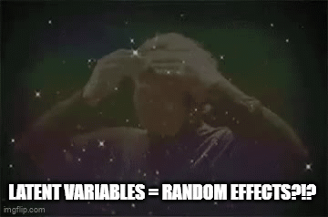
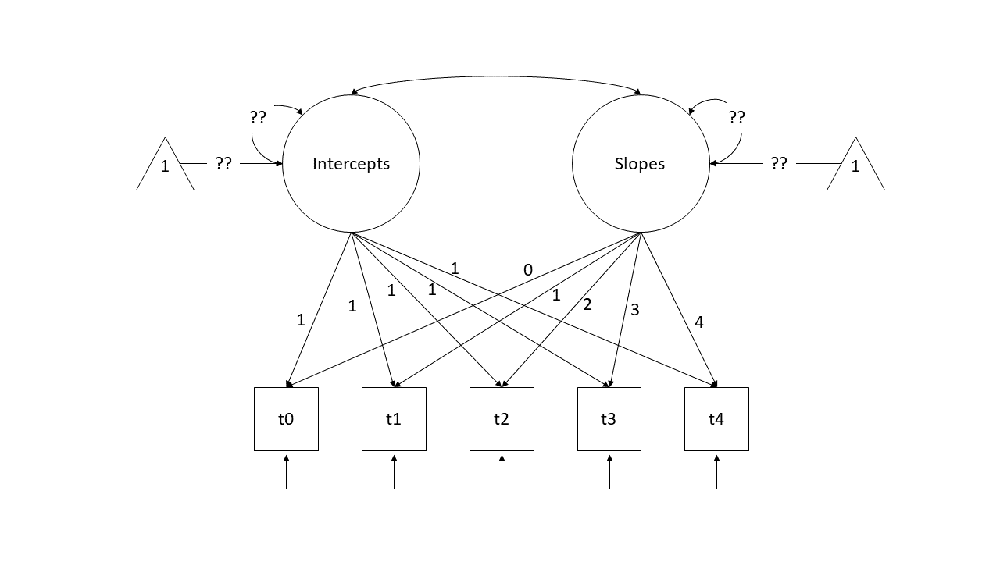

| variable | description |
|---|---|
| ID | Participant ID |
| stress1 | acute stress |
| stress2 | chronic stress |
| stress3 | environmental stress |
| stress4 | psychological stress |
| stress5 | physiological stress |
| IQ1 | verbal ability |
| IQ2 | verbal memory |
| IQ3 | inductive reasoning |
| IQ4 | spatial orientiation |
| IQ5 | perceptual speed |
Week 11 Exercises: More SEM!
PSS & IQ
Prenatal Stress & IQ data
A researcher is interested in the effects of prenatal stress on child cognitive outcomes. She has a 5-item measure of prenatal stress and a 5 subtest measure of child cognitive ability, collected for 500 mother-infant dyads.
- The data is available as a .csv file here: https://uoepsy.github.io/data/stressIQ.csv
Question 1
Before we do anything with the data, grab some paper and sketch out the full model that you plan to fit to address the researcher’s question.
Tip: everything you need is in the description! Start by drawing the specific path(s) of interest. Are these between latent variables? If so, add in the paths to the indicators for each latent variable.
Question 2
Read in the data and explore it. Look at the individual distributions of each variable to get a sense of univariate normality, as well as the number of response options each item has.
Hints
The psych package has the useful functionality here. Specifically things like multi.hist() and describe() will be handy.
If necessary, you can set multi.hist(data, global = FALSE) to let each histogram’s x-axis be on a different scale.
Question 3
As always, we want to assess the measurement models of each construct.
Let’s start with IQ. Fit a one factor CFA for the IQ items, and examine the fit. If it doesn’t fit very well, consider checking for areas of local misfit (i.e., check your modindices()), and adjust your model accordingly.
Be sure to use an appropriate estimation method, given the distributions of the indicator variables!
Hints
See the section on non-normality in Chapter 8#SEM-non-normality.
Question 4
Now do the same for a one-factor confirmatory factor analysis for the latent factor of Stress. Note that the items are measured on a 3-point scale!
Hints
See the section on categorical variables in the reading: Chapter 8#SEM-endogenous-categorical.
When you inspect your summary model output, notice that we have a couple of additional things - we have ‘scaled’ and ‘robust’ values for the fit statistics (we have a second column for all the fit indices but using a scaled version of the \(\chi^2\) statistic, and then we also have some extra rows of ‘robust’ measures), and we have the estimated ‘thresholds’ in our output (there are two thresholds per item in this example because we have a three-point response scale). The estimates themselves are not of great interest to us.
Question 5
Now its time to build the full SEM.
Estimate the effect of prenatal stress on IQ.
Hints
Remember: We know that IQ indicators are non-normal, so we would like to use a robust estimator (e.g. MLR). And the Stress indicators are only on a 3-point scale, so we want to make sure we specify that too. However, as lavaan will tell you if you try using estimator="MLR" at the same time as ordered = c(....), the MLR estimator is not supported for ordered data. It suggests instead using the WLSMV (weighted least square mean and variance adjusted) estimator.
As it happens, the WLSMV estimator is just the “DWLS” one we use for categorical variables, but with a correction to return robust standard errors. If you specify estimator="WLSMV" then your standard errors will be corrected, but don’t be misled by the fact that the summary here will still say that the estimator is DWLS.
Question Extra 6
Returning to our full SEM, adjust your model so that instead of IQ ~ Stress we are fitting Stress ~ IQ (i.e. child cognitive ability \(\rightarrow\) prenatal stress).
Take a guess: will this model fit better or worse than our first one?
A Replication
Question 7
In order to try and replicate the IQ CFA, our researcher collects a new sample of size \(n=500\). However, she has some missing data (specifically, those who scored poorly on the first few tests tended to feel discouraged and chose not to complete further tests).
Read in the new dataset, plot and numerically summarise the univariate distributions of the measured variables, and then conduct a CFA using the new data, taking account of the missingness (don’t forget to also use an appropriate estimator to account for any non-normality). Does the model fit well?
- The data can be found at https://uoepsy.github.io/data/IQdatam.csv
Hints
We can fit the model setting missing='FIML'. If data are missing at random (MAR) - i.e., missingness is related to the measured variables but not the unobserved missing values - then this gives us unbiased parameter estimates. Unfortunately we can never know whether data are MAR for sure as this would require knowledge of the missing values. See Chapter 8#SEM-missing-data.
Extra - Question 8
Note that the summary of the model output when we used FIML also told us that there are 3 patterns of missingness.
Can you find out a) what the patterns are, and b) how many people are in each pattern?
Hints
is.na() will help a lot here, as will distinct() and count().
Opportunities for growth?
development of pro-social behaviours in children: psb_traj.csv
We are interested in the development of pro-social behaviours over childhood. We recruited 50 children at age 4, and they completed a battery of assessments that aimed to measure how much they displayed sharing, cooperation, perspective-taking etc. These tasks altogether resulted in a score of pro-social behaviour — PSB in our data.
The data are available at https://uoepsy.github.io/data/PSBtraj.csv
Question 9
Forget about SEM and latent variables for a minute. We want to study the development of pro-social behaviours over childhood, and we have captured a measure of this (PSB) in ~50 children over 5 years.
We’re going back to lmer()!!
Fit a multi-level/mixed effects model to estimate the trajectory of PSB over childhood.
For now, please set REML = FALSE (this is just because we’re going to compare this model with something else fitted with standard ML).
Question 10
The model that we just fitted contains “random intercepts” and “random slopes”. We’ve talked about these as the group-level variability around the fixed intercept and fixed slope.
Think carefully about the following explanation of our random effects:
our random intercepts and random slopes are normally distributed variables that are not directly observed, that reflect “where childrens’ PSB starts” and “how childrens’ PSB changes”.
The quite subtle link that I am trying to make here is that we can think of those random effects in a similar way to how we think about latent variables!

And we can actually fit the exact same model in the latent variable modelling framework of lavaan!!
We have 5 time points, so let’s pivot things wider and consider our data in this format:
psbwide <-
psbtraj |>
pivot_wider(names_from = timepoint, values_from = PSB,
names_prefix = "t")
head(psbwide)# A tibble: 6 × 6
child t0 t1 t2 t3 t4
<int> <int> <int> <int> <int> <int>
1 1 11 14 10 13 17
2 2 20 25 30 34 40
3 3 16 13 11 10 9
4 4 11 16 18 22 29
5 5 18 19 19 23 23
6 6 16 14 10 14 15In this setup, we can start to think of each column containing scores as an indicator of a child’s underlying latent level of PSB (i.e., a child who scores high on all those observed variables (t0 to t4) is high on the unobserved latent construct of ‘pro-social behaviour’ and one who scores lower is estimated to be lower). With a little bit of trickery, we can encode the time-ordered structure of these indicators and split this up into an latent ‘intercept’ and a latent ‘slope’. To do so, we specify a model like the diagram below.

Note that we are fixing all the factor loadings to specific values. The “Intercepts” latent variable loads equally onto all timepoints scores, and the “Slopes” latent variable loads 0 on the first time point, 1 on the second, and so on..
So a child who is higher on latent PSB will score 1 higher at all time points. But additional to this, if a child has more of the latent “Slope of PSB” factor, will score 1 bit higher at time 2, 2 bits higher at time 3, 3 bits higher at time 4, and so on (where “bits” is yet to be estimated).
Think about what this implies for a child who has a latent intercept value of 10, and a latent slope value of 2:
| timepoint | estimate | expectation |
|---|---|---|
| 0 | (1 x intercept) +(0 x slope) | (1 x 10) + (0 x 2) = 10 |
| 1 | (1 x intercept) +(1 x slope) | (1 x 10) + (1 x 2) = 12 |
| 2 | (1 x intercept) +(2 x slope) | (1 x 10) + (2 x 2) = 14 |
| 3 | (1 x intercept) +(3 x slope) | (1 x 10) + (3 x 2) = 16 |
| 4 | (1 x intercept) +(4 x slope) | (1 x 10) + (4 x 2) = 18 |
What we are then interested in estimating is the variances and the means of the two latent variables (Intercepts and Slopes). In previous models we’ve been mostly concerned with modelling covariance (i.e., how variables change with one another), but we can also include the estimation of means (the average of each variable). In a diagram, these sometimes get drawn as the paths from a triangles with a 1 in it (this is just like an intercept in regression \(y = b_1\cdot1 + b2\cdot x\) - it is the \(b_1\) we are estimating, and the 1 in the triangle is just to indicate that it is a constant).
Try fitting the model below.
Note, for the demonstration here I have had to add some extra constraints. This is because our lmer model assumes that the residual variance is the same across time. Our version in lavaan does not, so here we’ve used the label “rvar” to indicate that the residual variance is equal at each indicator t0 to t4.
lgc1 <- "
ints =~ 1*t0 + 1*t1 + 1*t2 + 1*t3 + 1*t4
slopes =~ 0*t0 + 1*t1 + 2*t2 + 3*t3 + 4*t4
t0 ~~ r*t0
t1 ~~ r*t1
t2 ~~ r*t2
t3 ~~ r*t3
t4 ~~ r*t4
"
lgc.est1 <- growth(lgc1, data = psbwide)Examining the parameterestimates() for the lavaan model, and the summary() output for the lme4 model, compare and contrast.. What things are the same, what things are different?
Footnotes
whereas the variance of random effects was “how do groups in general vary?”, these are “where does [specific group X in our data] fall?”↩︎